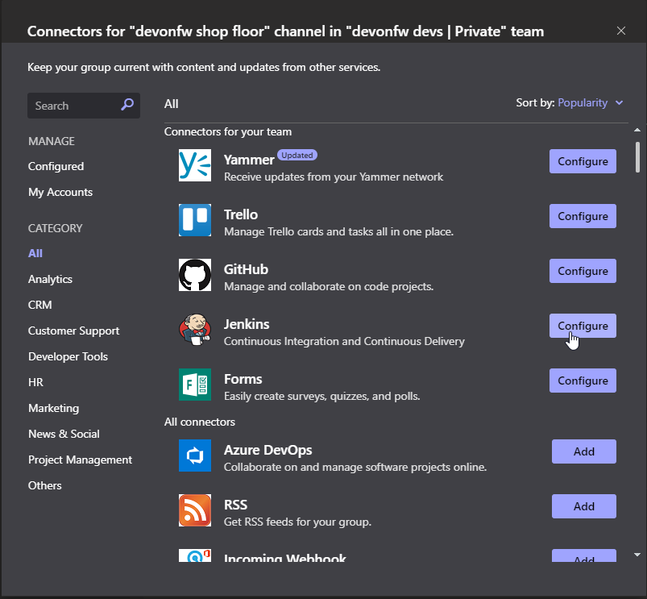
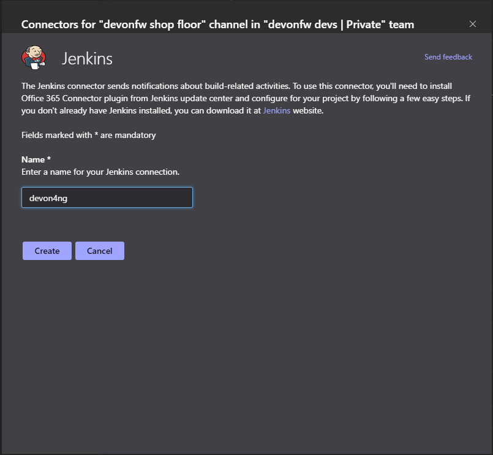
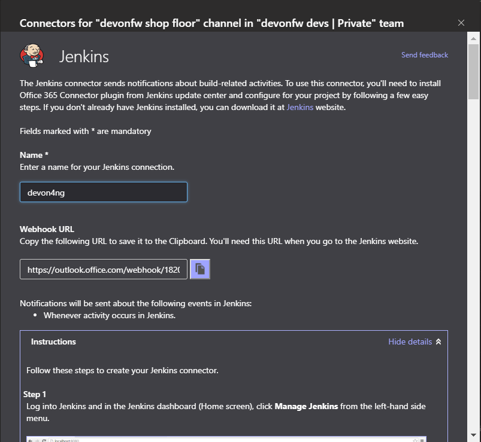
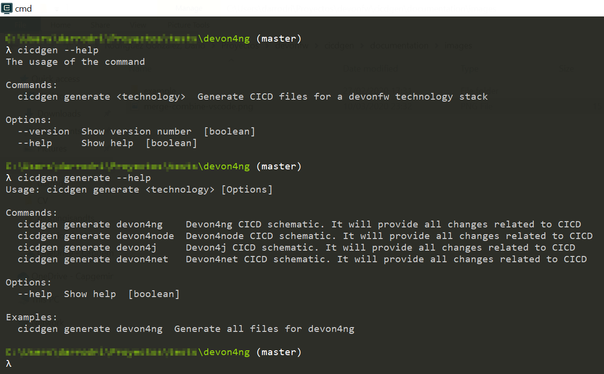
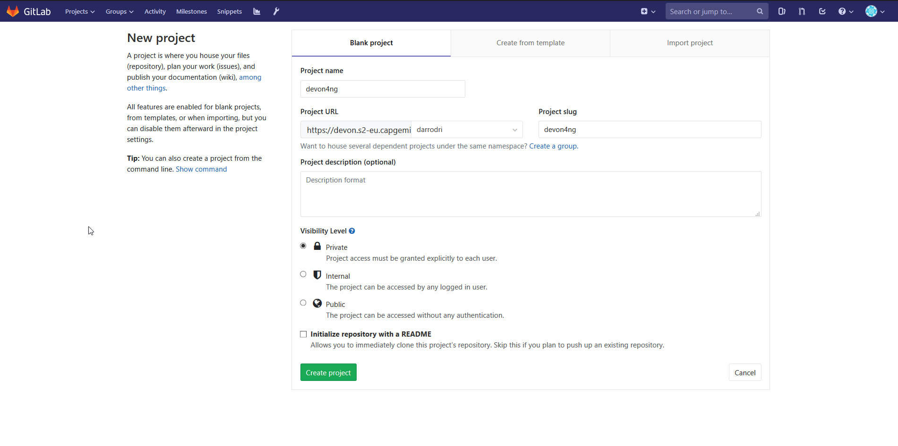
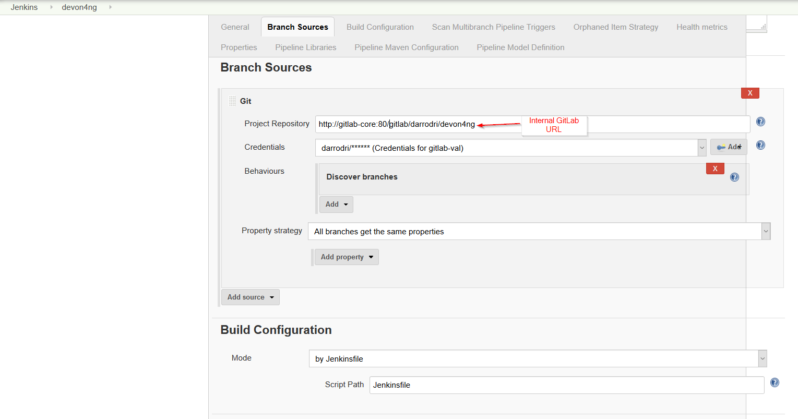
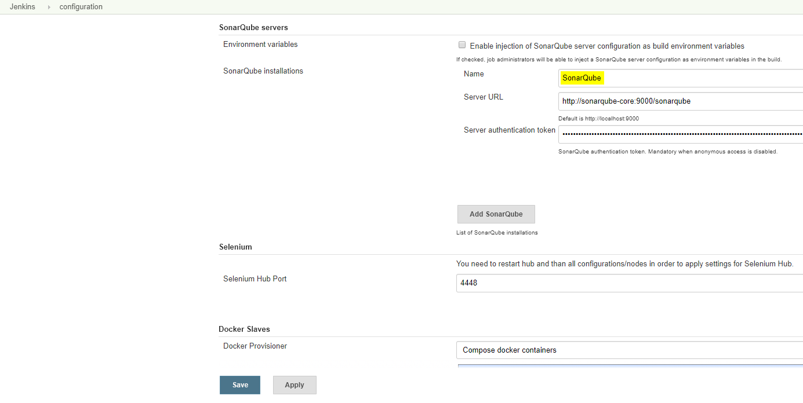
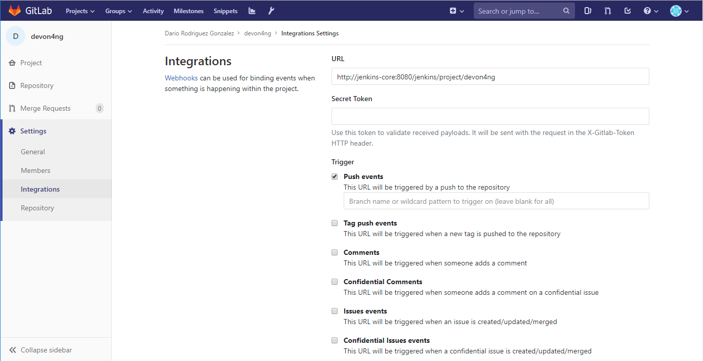

cicdgen usage example
In this example we are going to show how to use cicdgen step by step in a devon4ng project.
-
Install cicdgen
cicdgen is already included in the devonfw distribution, but if you want to use it outside the devonfw console you can execute the following command:
$ npm i -g cicdgen
-
Generate a new devon4ng project using devonfw ide.
Inside a devonfw ide distribution execute the command (
devon ng create <app-name>):$ devon ng create devon4ng
-
Execute cicdgen generate command
As we want to send notifications to MS Teams, we need to create the connector first:
-
Go to a channel in teams and click at the connectors button. Then click at the jenkins configure button.

-
Put a name for the connector

-
Copy the name and the Webhook URL, we will use it later.

With the values that we get in the previous steps, we will execute the cicdgen command inside the project folder. If you have any doubt you can use the help.


$ cicdgen generate devon4ng --groupid com.devonfw --docker --dockerurl tpc://127.0.0.1:2376 `--registryurl docker-registry-devon.s2-eu.capgemini.com --teams --teamsname devon4ng --teamsurl https://outlook.office.com/webhook/...`

-
-
Create a git repository and upload the code


$ git remote add origin https://devon.s2-eu.capgemini.com/gitlab/darrodri/devon4ng.git $ git push -u origin master

As you can see, no git init or git commit is required, cicdgen do it for you.
-
Create a multibranch-pipeline in Jenkins

When you push the save button, it will download the repository and execute the pipeline defined in the Jenkinsfile. If you get any problem, check the environment variables defined in the Jenkinsfile. Here we show all variables related with Jenkins:
-
chrome

-
sonarTool
-
sonarEnv
-
repositoryId
-
globalSettingsId
-
mavenInstallation
-
dockerTool
-
-
Add a
webhookin GitLabIn order to run the pipeline every time that you push code to GitLab, you need to configure a
webhookin your repository.
Now your project is ready to work following a CICD strategy.
The last thing to take into account is the branch naming. We prepare the pipeline in order to work following the git-flow strategy. So all stages of the pipeline will be executed for the branches: develop, release/*, master. For the branches: feature/*, hotfix/*, bugfix/* only the steps related to unit testing will be executed.